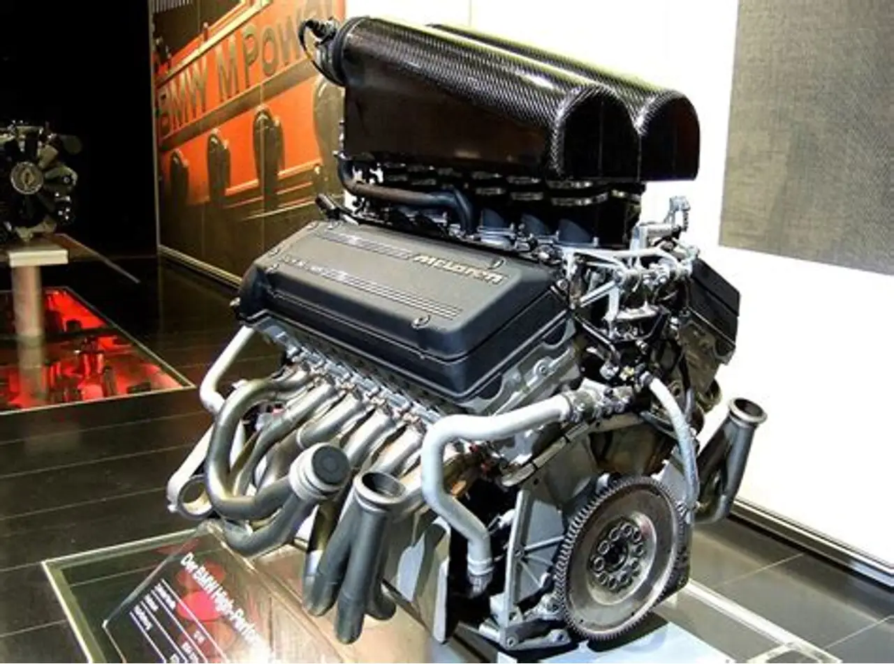

.webp)
La marca italiana Ducati estrenó el embrague antirrebote en motocicletas deportivas en 1987 en su modelo 851, una innovación nacida en las pistas para evitar que la rueda trasera se bloquee al reducir marchas de forma agresiva. En la década de 1980, el Countach incorporaba un alerón frontal que solo existía para cumplir con las normativas estadounidenses de altura mínima al suelo, ya que de serie el vehículo era demasiado bajo para la ley.
El McLaren F1, uno de los carros deportivos más rápidos y legendarios de la historia, tiene una característica increíble: el compartimento de su motor está forrado con oro real de 24 quilates. Aunque suena a un lujo extremo solo para millonarios, en realidad tiene una función técnica vital. El oro es uno de los mejores aislantes térmicos naturales que existen en el planeta. Los ingenieros tuvieron que usarlo obligatoriamente para evitar que el inmenso calor generado por su poderoso motor V12 terminara derritiendo o dañando la carrocería de fibra de carbono. ¡Pura ingeniería extrema!

La Kawasaki Ninja H2R no solo es conocida por ser una bestia sobrealimentada capaz de alcanzar los 400 km/h (es tan rápida que es ilegal manejarla en calles normales y solo se permite en pistas de carreras), sino que también tiene tecnología que parece magia. Su pintura especial negra tipo espejo contiene una capa química de iones de plata. Esta capa tiene un "efecto memoria": si la moto sufre rasguños finos o arañazos leves con el uso normal, basta con dejarla bajo el calor del sol. El calor hace que la pintura se expanda lentamente y "sane" los rayones por sí sola, volviendo a quedar como nueva.